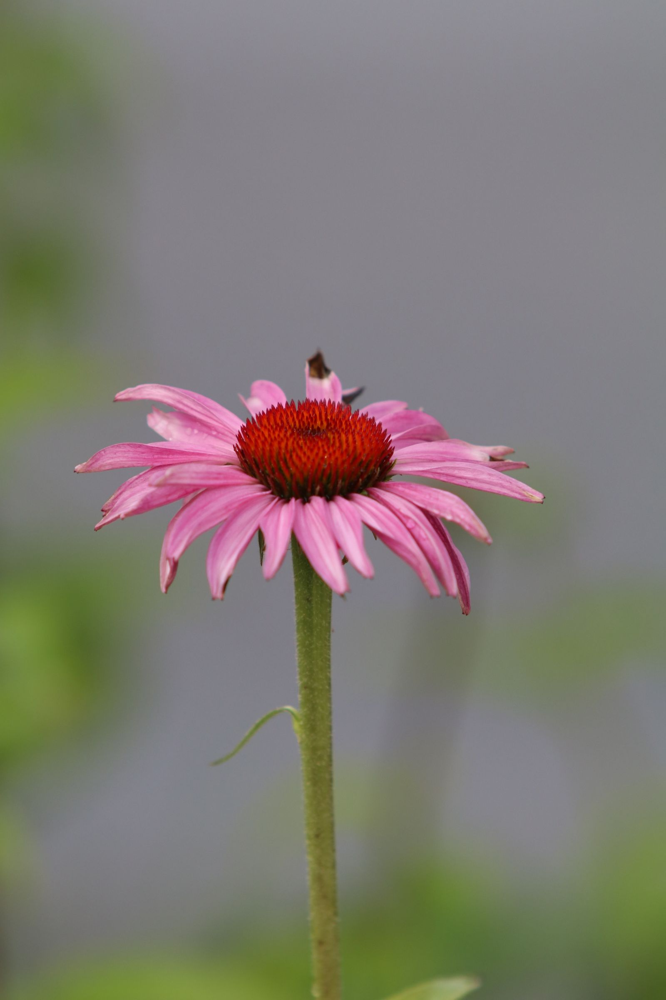

Cikk · Echinacea
Echinacea és megfázás: a kockázatnál enyhe jel, a tüneteknél nem
A NIH összefoglalója szerint az echinacea enyhén csökkentheti annak esélyét, hogy megfázzál. A tünetek súlyosságát és a betegség hosszát viszont nem rövidíti. Az influenzára az adat nem egyértelmű.

Mi a kérdés?
Ősszel sokan nyúlnak kasvirághoz. Te is hallhattad: „immunerősítő”, „megfázás ellen”. A kérdés egyszerűbb. Mit mond erről egy amerikai intézeti összefoglaló, és hol áll meg az ígéret?
A forrás a NIH Dietary Supplements for Immune Function and Infectious Diseases fogyasztói lapja, frissítve 2025. március 10-én. Nem magyar kezelési útmutató, és nem mindenkire szóló adag.
Mit ír a NIH?
Az echinacea Észak-Amerikában és Európában is nő. A lap szerint segíthet bizonyos vírusok és más kórokozók növekedésének vagy terjedésének gátlásában, és érintheti az immunműködést és a gyulladást. Ez a lehetséges mechanizmus, nem bizonyított gyógyítás.
A lap szerint így jön ki A vizsgálatok azt találták, hogy az echinacea enyhén csökkentheti a megfázás kockázatát. A tünetek súlyosságát nem csökkenti, és a betegség hosszát sem rövidíti.
Óvatosan Az influenzára nem egyértelmű, hogy segít-e. A lap ezt külön jelzi.
A biztonságról azt írják: általában biztonságosnak tűnik. Mellékhatásként előfordulhat gyomorpanasz, hasmenés, alvászavar és bőrkiütés. Ritka esetben allergiás reakció is lehetséges. Gyengítheti egyes gyógyszerek, köztük az immunrendszert elnyomó készítmények hatását. Terhességben a biztonságosságát nem tudják megmondani.
Mit nem állít ez az összefoglaló?
Nem azt mondja, hogy a tea vagy a kapszula „meggyógyítja” a megfázást. Éppen azt emeli ki, hogy ha már megfáztál, a tünetek súlyára és a napok számára nem számíthatsz rövidülésre ebből a forrásból.
Azt sem ígéri, hogy minden készítmény ugyanaz. Az echinacea-termékek növényfaja, növényrésze és kivonási módja nagyon eltérhet. Ez a lap általános képet ad, nem egy konkrét dobozról dönt.
Mit nem állítunk
Nem mondunk grammot, cseppet vagy kapszulaszámot. Nem diagnózis, és nem kezelési javaslat.
Nem állítjuk, hogy az echinacea helyettesíti az orvost, a gyógyszert vagy a védőoltást. A megfázás és az influenza nem ugyanaz a kérdés ebben a forrásban.
Nem mondjuk, hogy minden kasvirág-készítmény egyforma. A NIH és a metaanalízis is a termékek különbözőségére figyelmeztet.
A COVID-19 kérdését a NIH külön lapon tárgyalja. Ebből az írásból arra nem vonunk le következtetést.
Források
- Office of Dietary Supplements, NIH. Dietary Supplements for Immune Function and Infectious Diseases — Fact Sheet for Consumers. Frissítve: 2025. március 10. Echinacea szakasz. https://ods.od.nih.gov/factsheets/ImmuneFunction-Consumer/
- Gancitano G és mtsai. Echinacea Reduces Antibiotics by Preventing Respiratory Infections: A Meta-Analysis (ERA-PRIMA). Antibiotics. 2024;13(4):364. https://doi.org/10.3390/antibiotics13040364 · PMC11047471